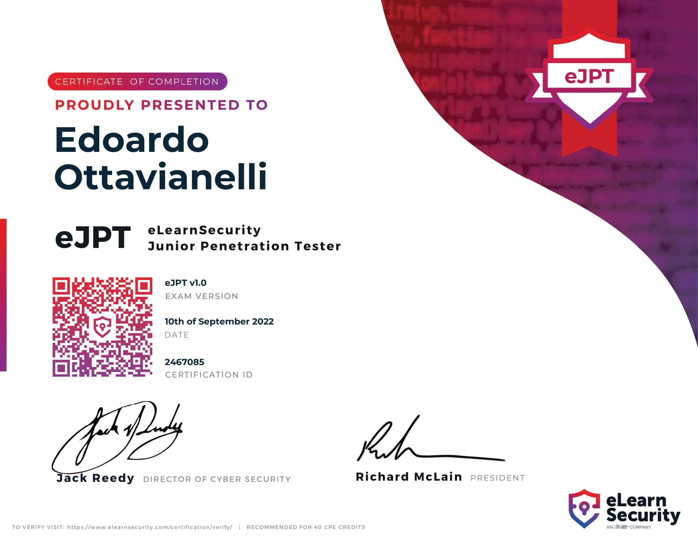

Edoardo Ottavianelli
Cybersecurity Student at Sapienza University. Passionate about Computing, Nature and cooking.
Contact meeJPT - Certified Junior Penetration Tester
Author: Edoardo Ottavianelli11/09/2022
TL;DR: Notes I took while preparing for eJPT certification
Hi everybody! Such a long time since I don't post here. I'm fine btw, just wanted to write a bit! Yesterday I took the eJPT exam and this will be the main topic of this blog post. First of all: what is eJPT? It's an acronym that stands for "eLearnSecurity Junior Penetration Tester"; eLearnSecurity is a company owned by INE. Why this certification? Tbh idk :) I have to say that 99% of the things/topics/techniques/hacks/tools used and taught during the course I already knew, but I think it's good to follow a path! I hope I will try the eWPT (Web Pentester) in some months, so as a starting point I took the eJPT (as almost anyone does as far as I can understand). You can learn more about the certification here.

eJPT Preparation
Do you need preparation? In my honest opinion... 'IT DEPENDS' as always 🥲. I'm following (2 exams left at the time of writing) a Master Degree in Cybersecurity and so I think I didn't need too much training, I think I could do it without preparation, but not knowing the exam and since I don't like wasting money I thought it was a good thing to follow the course. Yes, there is a course and it's free:- Sign up on https://my.ine.com/
- Search the course "Penetration Testing Student"
N.B: The course is free!
Advice
- Take notes during the course.
- Try each lab they propose to you.
- Take notes during the course.
- If you don't understand something, don't skip it! Google the topic and read about it.
- Take notes during the course.
- If you're lazy, these are the notes I took
The exam
Since I can't spoil you anything about the exam, I just want to give you some advice regarding it. Be aware that this isn't a CTF (or Capture The Flag), this wants to be a real scenario, so don't search for stupid CTF-like methods to leak info, instead heavily focus on information gathering and recon. You have 3 days to complete the exam, I started at 8:50 AM and submitted it at 3 PM (Rome timezone). Honestly, I think I already finished it like before lunch (1 pm) but I wanted to be sure to have completed all the questions (Got 19 correct answers out of 20). Another piece of advice on the exam: take notes (a lot of notes!) also during the exam, because they can help you and also answer the questions during the test, not all at the end. Then, a lot of people will tell you that you need a Virtual Machine to do the exam, but I think it's way easier to use your principal OS. I have an ubuntu machine as the main OS with all the necessary tools (Nessus, Metasploit, all recon and info gathering tools...). The connection part is very easy:- Download the OVPN file with your credentials
- Execute "sudo openvpn file.ovpn"
- Enter the credentials
- Once you see "Initialization Sequence Completed" you're effectively connected
- Type CTRL+Z
- Execute "bg"
- Ping a machine inside the internal network to test your connection
Paths to follow
In the end, once certified, I have to say it was not such a big step ahead, but I hope it will help me for other certs in the future. I'm focusing on network and web targets, so I hope I will be able to take eWPT or another equivalent cert.If you have any doubt or just want to ask me something, ping me here.
edoardottt👹